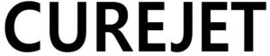

Trade Mark Journal No.2026/011 13 March 2026
WO0000001903597 (10,44)
Office of origin: Republic of Korea
Date of International Registration:19 December 2025
Date of designation in the UK:
19 December 2025

International priority date claimed: 1 July 2025
(Republic of Korea)
(4020250115040)
International priority date claimed: 1 July 2025
(Republic of Korea)
(7020250000842)
- Class 10
- Medical apparatus for treatment of the face, body, tissue and skin; solenoid medical apparatus for treatment of the face, body, tissue and skin; needle free tips for medical surgery and medical procedures (medical apparatus and instruments for the treatment of skin); energy based needle free injector aesthetic apparatus for surgical and dermatological uses (medical apparatus and instruments for the treatment of skin); medical skin enhancement apparatus using needle-free injector based on solenoid or air pressure for treatment of the face, body, tissue and skin; skin enhancement apparatus using needle-free injector for medical treatment of the face, body, tissue and skin; medical skin aesthetic apparatus using needle-free jet injector based on solenoid or air pressure for treatment of the face, body, tissue and skin; medical skin care apparatus using energy based needle-free injectors for treatment of the face, body, tissues and skin; medical needle-free injector skin enhancement apparatus for treatment of the face, body, tissue and skin; medical skin care apparatus using needle-free injector for treatment of the face, body, tissue and skin; skin enhancement apparatus using needle-free injector for surgical and dermatological uses; skin diagnostic equipment for use in diagnosing skin conditions for medical purposes; skin peeling devices in the nature of skin abraders for medical use; skin peeling devices in the nature of skin abraders for non-medical aesthetic use (esthetic massage apparatus); needle-free tips having air pressure for medical surgery and medical procedures (medical apparatus and instruments for the treatment of skin); skin treatment apparatus and instruments with an array of needle-free tips in a cartridge that enhances penetration of topically applied substances into the face, body, tissue and skin; skin treatment apparatus and instruments with an array of needle-free tips in a cartridge; medical devices for delivering skin treatment system; injection instruments without needles.
- Class 44
- Dermatology services; dermatological services for treating skin conditions; medical services for treatment of the skin; providing medical advice in the field of dermatology; providing medical information in the field of dermatology; cosmetic laser treatment of skin; laser skin rejuvenation services; laser skin tightening services; skin beauty salons; skin care salons; leasing skin care equipment; skin beauty consultancy; beauty therapy; performing cosmetic procedures for medical purposes; beauty care for human beings; consultancy in the field of body and beauty care; human hygiene and beauty care; beauty treatment services; providing information about beauty; beauty salon services; beauty consultancy; consultancy services relating to beauty; facial beauty treatment services; cosmetic treatment for the face; medical procedures that enhance penetration of topically applied substances into the face, body, tissue and skin; non-medical aesthetic care services that enhance penetration of topically applied substances into the face, body, tissue and skin; non-medical aesthetic services, namely, energy based procedures for the face, body, tissue and skin; medical consulting services in the field of dermatology and cosmetic treatments; providing medical information in the field of dermatology and cosmetic treatments; medical services, namely, energy based procedures for treatment of the face, body, tissue and skin; cosmetic treatment services; injector procedures services for treatment of the face, body, tissue and skin; fractional procedures services for treatment of the face, body, tissue and skin; skin boosters and injectables delivery procedure services for treatment of the face, body, tissue and skin; needle-free injector procedures for treatment of the face, body, tissue and skin.
BAZ BIOMEDIC Co., Ltd.
Representative: HANYANG International Patent and Law Firm, 12, Nonhyeon-ro 38-gil,, Gangnam-gu, Seoul, REPUBLIC OF KOREA